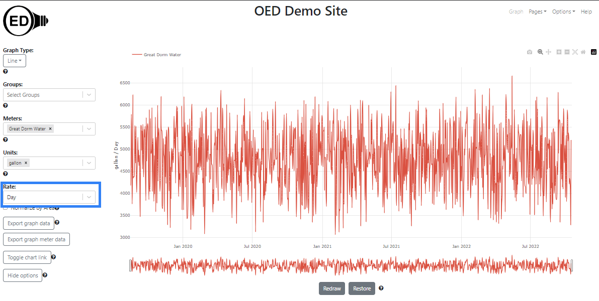

The rate menu on the line graphic page is shown in the following figure (highlighted in blue box). Note the "Great Dorm Water" meter has already been selected. The y-axis is graphing in "gallon / Hour" since "Hour" is the rate. The rate of "Hour" was selected by OED since it is the default rate and a different one was not selected.
The following figure shows the rate menu choices when it is clicked. There are four available rates: "Second", "Minute", "Hour" and "Day". "Hour" is in darker blue since it is the current choice and "Day" is in lighter blue since the mouse pointer is over that choice (cannot see mouse pointer in image).

If one selects the rate of "Day" then the line graphic is updated to reflect that rate as shown in the next figure. The y-axis is now labeled "gallon / Day" to reflect the new rate. The values shown are 24 times larger than the figure above with a rate of "hour" since a day is 24 times slower rate than an hour so it covers more time.

One can select any rate at any time.
The units of "kWh" and "kW" (if present at a site) are special in terms of rates. Both will graph as "kW" as described in graphic units used. While the name does not imply this, watt (W) already has an associated rate since it is defined as joules / second. As such, it would be unusual (strange) to normalize watts to another rate. Thus, no matter what rate you choose, it will not alter the y-axis label or the graphic values when the line graphic is showing "kW". At the current time OED does not stop you from selecting a rate in this case. A future release will not allow rate selection for "kW".
Some units, such as temperature, do not graph as a rate (see for more information). Given this, there is no associated rate so selecting any rate does not change what is displayed. As with "kW", just described above, OED plans to disallow rate selection in this case in a future release.